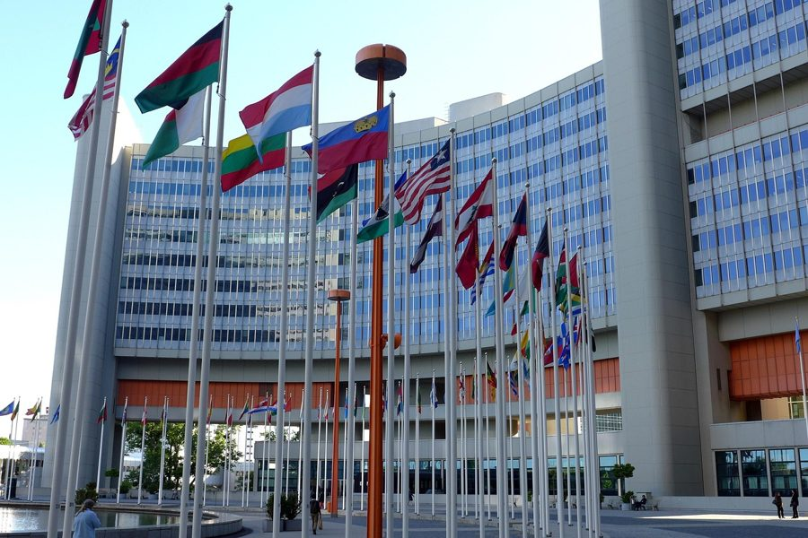

01
젤렌스키, 성탄절 전 3자 종전협상 개최 용의
국제G20 다자회의 계기 우크라·미국·러시아 정상회담 추진 가능성 급부상

젤렌스키 우크라이나 대통령이 올해 성탄절 이전에 미국, 러시아와의 삼자 종전협상을 개최하는 데 동의했다는 소식입니다. 국제 다자회의 무대를 계기로 종전 논의가 본격화될 가능성이 커졌습니다.
이번 발표는 장기화된 전쟁의 분수령이 될 수 있다는 점에서 글로벌 외교가의 큰 관심을 받고 있습니다. 특히 미국 대선 이후 변화하는 정세 속에서 신속한 종전 타결 방안이 모색되고 있습니다.
향후 각국의 이해관계가 걸린 영토 문제와 안보 보장 조건이 실제 협상 테이블에서 어떻게 조율될지가 핵심 관전 포인트입니다.
참고: 연합뉴스